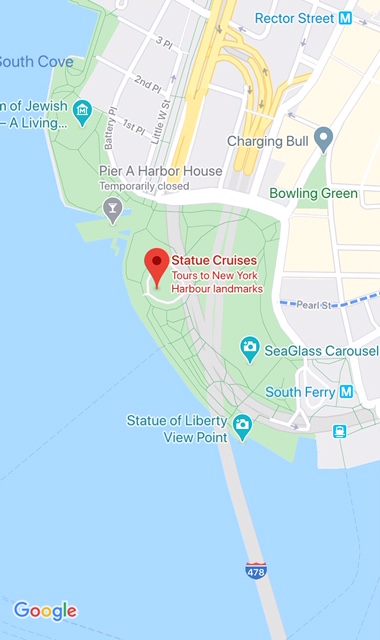
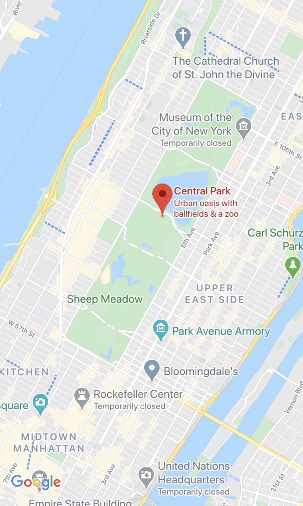
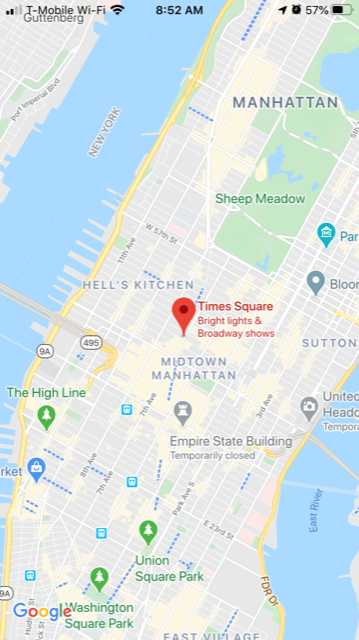

You're finally visiting New York City! New York is the most populous city in the United States and is a experience of a lifetime. In this guide you will see The City That Never Sleeps in a day. EnjoOoY!
Address: Statue of Liberty is located in Liberty Island and Ellis Island, located in New York Harbor, via ferries operated by Statue Cruises. These ferries leave from Battery Park, to get directions and info on how to get there and where to buy tickets click on the map below! 
"The Statue of Liberty Enlightening the World" was a gift of friendship from the people of France to the United States and is recognized as a universal symbol of freedom and democracy and was dedicated on October 28, 1886. It was designated as a National Monument in 1924. Visiting Liberty Island is one of the most rewarding experiences of any trip to New York City. However, visitors who wish to enter the pedestal or crown must secure reservations in advanced. Reservations secured far enough in advance allow visitors to select their desired level of access, and also eliminates the need to wait in line to purchase tickets. Crown tickets are available by advanced reservation only.
There are plenty of great food places you can enjoy around the area of Battery Park, where you can enjoy a delicious brunch. Click here to see a full list of food places you could visit nearby.
Address: 59th to 110th Street Manhattan Borough, from Central Park West to 5th Avenue, New York City. In the heart of Manhattan. The Empire State Building is located on the west side of Fifth Avenue in Manhattan, between 33rd Street to the south and 34th Street to the north. If you would like to see directions on google maps then click on the map below! 
Central Park is the great, green heart of New York City. The 843-acre green space (two and a half miles in length and a half mile in width) includes meadows, forests, lakes, monuments and spectacular architecture. The essentials attactions The Pond, Central Park Zoo, The Mall, Conservatory Water and The Ramble. After you can walk to Empire State Building. Entrance of the building through the Art Deco lobby located at 350 Fifth Avenue. There are observatories on both the 86th and 102nd floors. The Empire State Building Run-Up is an annual race up the stairs to the 86th floor (1,576 steps).
Whilst you are there, there are plenty of affordable food places you can enjoy around the area, ranging from cuban, asian and italan . Click here to see the a full list of food places around Empire State.
Address: Times Square, square in Midtown Manhattan, New York City, formed by the intersection of Seventh Avenue, 42nd Street, and Broadway. Click on the image of the map below to see directions. 
Flashing neon lights and giant digital billboards. Brilliant Broadway marquees. Costumed characters and musicians. Times Square is big, bright and unforgettable. Its main junction is filled with popular retailers—plus the TKTS discount booth, which offers up to 50 percent off theater tickets. Walk to the top of its red steps—you may know them from the "Empire State of Mind" video—for a sweeping view of the area, including One Times Square, the building from which the ball drops on New Year's Eve. People-watchers will love the pedestrian-only zones furnished with tables and chairs.There is also a good selection of bars & restaurants. You could visit that offer Broadway shows as well as a great oppotunity.
The area offers a great range of restaurants, that would be perfect for enjoying a dinner or drink, many famous rooftop are located around on higher levels of the buliding which allows visitors to enjoy their meal whilst being sorrounded by the views of New York. Click here to see all the amazing restaurants and bars in the shard you can visit.
© copyright 2020